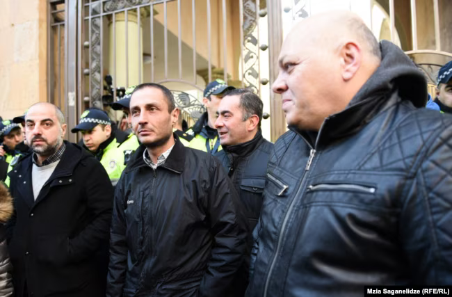

ძალადობს, ცრუ ჩვენებებს იძლევა, მეტ პრემიას იღებს, ნაკლებს სთხოვენ - ქართული პოლიციის პორტრეტი
პოლიტიკის არაერთი კომენტატორის აზრით, დღეს ქართული პოლიცია "ოცნების" მთავარი საყრდენი და იარაღია ავტოკრატიის მშენებლობის გზაზე. გაზრდილი ხელფასები, უპრეცედენტოდ მაღალი პრემიები და პოლიციაში მუშაობის დაწყების სიმარტივე ბევრს იზიდავს, პოლიციელების ჩადენილი დანაშაულების გამოუძიებლობა კი დაცულობის გარანტიებს იძლევა.
ბევრმა კამერამ გადაიღო, როგორ ეპარება უკნიდან პოლიციელი და თმებს ქაჩავს 20 წლის სტუდენტ გოგოს, რომელიც დაკავებულ დემონსტრანტს ეჭიდება. ჟურნალისტები დაადგენენ, რომ ის როინ მესხია. სტუდენტი კი ჩივილს არ აპირებს - არ ენდობა არც გამოძიებას და არც სასამართლოს. ეს ამბავი 21 აპრილს, აღდგომის მეორე დღეს, პარლამენტის წინ მოხდა, როცა მოქალაქეები აპროტესტებდნენ წინა ღამეს სამი დემონსტრანტის დაკავებას - 24 აპრილს როინ მესხი შინაგან საქმეთა მინისტრის მოადგილედ ინიშნება. კაცი სამოქალაქო ტანსაცმელში, ხელზე სამკლავურით, რომელსაც Police აწერია, რუსთაველზე მოქალაქეს აკავებს - დაკავებულ ლევან ზაზაძეს მოსამართლე კახა ჩაგუნავა 12-დღიან პატიმრობას შეუფარდებს. ის დაკავებისას ტროტუარზე იდგა რამდენიმე ათეულ ადამიანთან ერთად, ხალხი “ქართული ოცნების” მიმართ პროტესტის გამოსახატავად შეიკრიბა. ესეც 21 აპრილის ამბავია - ამ დღეს პარლამენტთან კიდევ ორი ადამიანი დააკავეს. “გადი აქედან, რას მიდგები აქ”, - ეუბნება 22 აპრილს პოლიციელის მანქანიდან პატრული ქალს, რომელიც მას აჩვენებს ბანერს წარწერით: ”თმას თუ მომქაჩავ, მოგითრევ!” ამ პოლიციელმა ერთ-ერთ საპროტესტო აქციაზე გამოლაპარაკებისას გვითხრა: “ყველა ხელისუფლების დროს მიმუშავია პოლიციაში, ასეთი კარგი მთავრობა არასოდეს არ გვყოლია." 23 აპრილს პარტია “ახლის” პრესმდივან მირანდა ბაღათურიას პოლიციის ერთ-ერთი სამმართველოდან აცნობეს, რომ პოლიციელ მირიან ქავთარაძის შეურაცხყოფას ედავებიან. შეურაცხყოფად პოლიცია მიიჩნევს facebook-ზე სასამართლოში გადაღებული ვიდეოს გავრცელებას, რომელშიც მოქალაქეები ხმამაღლა უყვირიან და აგინებენ მირიან ქავთარაძეს, საბა სხვიტარიძის საქმის ერთ-ერთ მოწმეს.
“ეს დემონსტრაციული ძალადობა, სახეში ცემა, ადამიანების წამება, რაც ჩვენ ვნახეთ ჯერ კიდევ 2024 წლის ნოემბერ-დეკემბერში და წინა პერიოდშიც შედარებით ეპიზოდურად, ნამდვილად ახალია და ამას ემატება დრაკონული კანონები და კოლოსალური ჯარიმები, რომლებიც რეალურ საშუალო ხელფასს ლამის 8-ჯერ აღემატება”, - ეუბნება რადიო თავისუფლებას ლაშა ჩხარტიშვილი, "ლეიბორისტული პარტიის" უფლებადაცვითი ცენტრის ხელმძღვანელი, რომელსაც შეკრებისა და მანიფესტაციის უფლებების დაცვის რეალიზაციისთვის ბრძოლის მრავალწლიანი გამოცდილება აქვს. ლაშა როგორც "ქართული ოცნების", ისე მისი წინამორბედი "ნაციონალური მოძრაობის" ხელისუფლების დროს არაერთხელ დააკავეს და დააჯარიმეს. ხელისუფლების ოპონენტი, ჯამში 22 ჯარიმისა და 14 ადმინისტრაციული პატიმრობის შემდეგ, ახლა კიდევ ერთ პატიმრობას ელოდება.
შინაგან საქმეთა სამინისტრო პოლიციის დაუმორჩილებლობისა და შეურაცხყოფისთვის მის დაპატიმრებას ითხოვს. ლაშა ჩხარტიშვილი თავის სასარგებლო გადაწყვეტილებას არ ელოდება, მის საქმეზე გადაწყვეტილება ესტონეთის და ლიეტუვის მიერ სანქცირებულმა მოსამართლე ზვიად ცეკვავამ უნდა გამოიტანოს. ლაშამ ის უკვე გააფრთხილა, რომ არის ერთადერთი მომვლელი მძიმედ ავადმყოფი დედისა, რომლისთვისაც მისი პატიმრობა შეიძლება ფატალურად დასრულდეს. “სამჯერ მაქვს სტრასბურგის სასამართლო მოგებული - ორჯერ სააკაშვილის და ერთხელ "ოცნების" ხელისუფლებაში ყოფნისას. ამ საქმესაც აუცილებლად მოვიგებ. არც სისტემა შეცვლილა და არც მთავარი პერსონაჟები. ყველაზე მძიმე დანაშაულების მონაწილეები და ყველაზე მძიმე დავალებების შემსრულებლები, იქნება ეს ხარება [ზვიად ხარაზიშვილი, გდდ-ს ხელმძღვანელი] თუ ლევან მურუსიძე, ისევ ადგილზე არიან”, - ამბობს ლაშა. ბოლო შემთხვევა, რომელზეც მან ადამიანის უფლებათა ევროპულ სასამართლოში საქართველოს მოუგო, 2019 წელს ეროვნულ ბიბლიოთეკასთან რამდენიმე მარცვალი ლობიოს ჰაერში აყრისთვის დაკავებას შეეხებოდა.